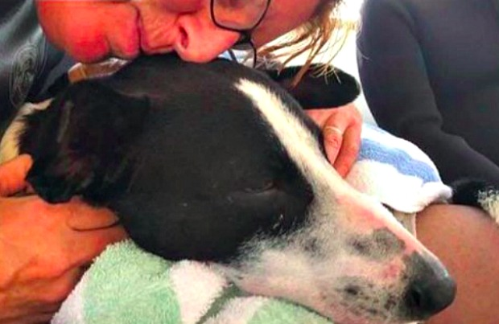

Cão perdido no mar caribenho é resgatado
Lucky (sortudo, em inglês) foi encontrado a deriva no mar caribense por um grupo da organização Diving For Life (Mergulhando Pela Vida, em inglês), que faz mergulha para gerar dinheiro e atenção para problemas de saúde LGBT. No começo, ele foi confundido com um pássaro, mas ao se aproximarem a tripulação no barco percebeu que na verdade era um cão, tentando não se afogar. A tripulação rapidamente se mobilizou para resgatá-lo, mergulhando para pega-lo e rapidamente cobrindo ele em toalhas para evitar hipotermia.
Quando ele foi tirado do mar, estava tremendo e disorientado. Por sorte, um dos membros da tripulação era um veterinário. Após chegarem na costa, foi verificado que o cão estava relativamente sadio e sem doenças. Não foi encontrado o dono do animal.